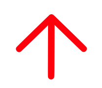

Bennes solidaires se positionne comme une plate-forme dédiée à l'économie circulaire des ressources bio et géo-sourcées, où l’excèdent de matière de l'un·e devient la matière première de l'autre. Cette plateforme est ouverte à toutes et tous : designers, créateur·rices, artisan·es, bâtisseur·euses et particuliers.
Quel est le projet de Bennes solidaires ?
Quel est le projet de Bennes solidaires ?
Quel est le projet de Bennes solidaires ?
L'idée initiale de ce projet découle d'un constat évident : ces matériaux incitent au réemploi et à la création, mais peu d'initiatives sont actuellement déployées en ce sens. Ainsi, cet outil offre une opportunité aux matériaux bio et géo-sourcés de retrouver une valeur et une nouvelle utilité, tout en évitant le recours systématique à la déchetterie et en encourageant des initiatives vertueuses.
Quel est le fonctionnement de Bennes solidaires ?
Quel est le fonctionnement de Bennes solidaires ?
Quel est le fonctionnement de Bennes solidaires ?
J'IDENTIFIE
Vous avez un surplus de matière sur votre lieu de travail, sur votre chantier de rénovation, ou tout simplement parce-que votre matière n’est plus destinée à la vente ? Ici, c’est l’étape qui consiste à identifier l’excédent de matière dont vous disposez.
JE CLASSE
Les matériaux pouvant être enregistrés sur la plateforme sont issus de sources bio-sourcée ou du géo-sourcée. Ici, vous trouverez deux listes non-exhaustives pour chacune de ses typologies. Si votre matériau n’est pas encore classé : pas de problème, vous pourrez le proposer en créant votre annonce et notre modérateur s’en occupera !
- Matériaux géo-sourcés
- terre
- pierre
- gravier
- sable
- verre
- céramique
- Matériaux bio-sourcés
- bois
- papier
- papier journal
- paille
- canne de Provence
- bambou
- sciure de bois
- liège
- coquille
- marc de café
JE REMPLIE LE FORMULAIRE
On vous demande le minimum d’informations pour que la transaction se déroule au mieux (type de matériau, volume, adresse de récupération, ...).
JE CARTOGRAPHIE
Le principe est simple : lorsque vous créez votre annonce, un code postal vous sera demandé afin que les autres membres sachent dans quelle zone géographique venir chercher le matériau en question. En appliquant sa recherche, un pointeur fixé sur la cartographie indiquera donc les environs où venir le récupérer. Suite à la prise de contact, l'adresse exacte pourra être communiquée en message privé.
JE POSTE
Votre annonce est sur le point d’être publiée.
J'ADHÈRE
Soutenez l’action de Bennes solidaires en devenant adhérent·e sur la plateforme www.helloasso.com.
— cotisation minimale : 5€
— cotisation de base : 20€
— cotisation de soutien : 50€
NOUS ÉCRIRE
bennes-solidaires@contact.comASSOCIATION LOI 1901
SIRET 91938174110017
RNA W421005131